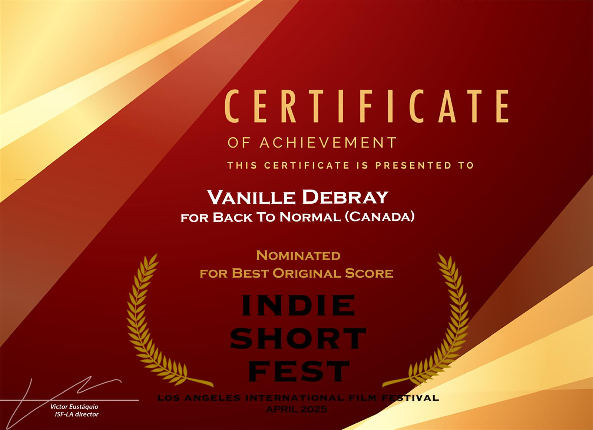
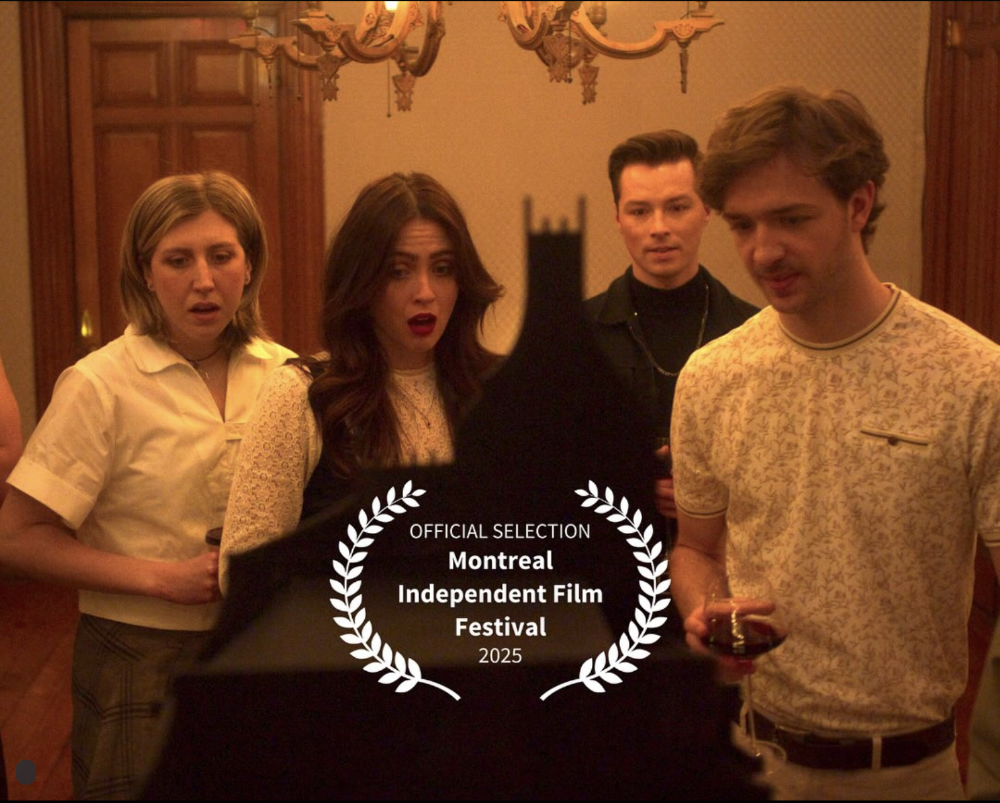

About
Bio
Vanille Debray is a film-music composer and songwriter. She writes orchestral, electronic and ambiant soundtracks, and produces indie-pop songs.
She recently scored her first feature film, Masterpiece, which premiered at KFCC in February 2025. She also works as an arranger, and has produced arrangements for Royal Caribbean Cruises bands.
A classically-trained pianist and vocalist, Vanille grew up in the south of France and is now based in Montreal, where she obtained a Bachelor's of Music at McGill University in 2018,
in Music and Sound Recording. She has released multiple indie-folk songs, most recently an electro-pop EP, "Wild Card", released in July 2022.
Vanille is active in the local music scene as a performer and composer for indie films. She also works as an educator, teaching piano, improvisation, guitar, voice, music theory and audio production.
Education
• International Music & Cinema Film Festival, Marseille: Lab on Mars film scoring program - 2024
• Station Clip, Montreal: Ableton for live production training - 2023
• Station Clip, Montreal: Diversity and equity in audio production (Ableton training) - 2023
• International Music & Cinema Film Festival, Marseille: 10 day scoring masterclass with composer Rémi Boubal - 2023
• International Music & Cinema Film Festival, Marseille: Third character film scoring program - 2022
• McGill University, Montreal: Qualifying year in Sound Recording - 2017-2018
• McGill University, Montreal: Bachelor of Music (Faculty classical piano program) - 2014-2018
• Station Clip, Montreal: Ableton for live production training - 2023
• Station Clip, Montreal: Diversity and equity in audio production (Ableton training) - 2023
• International Music & Cinema Film Festival, Marseille: 10 day scoring masterclass with composer Rémi Boubal - 2023
• International Music & Cinema Film Festival, Marseille: Third character film scoring program - 2022
• McGill University, Montreal: Qualifying year in Sound Recording - 2017-2018
• McGill University, Montreal: Bachelor of Music (Faculty classical piano program) - 2014-2018
Screen Music Projects
• Get Up, David, Get Up (2025): soon to start scoring a feature-length Montreal-based documentary dir. Allen Forouhar.
• Masterpiece (2025): soundtrack for a feature comedy film, dir. Evan Bard, premiered at Kingston Canadian Film Festival. Nominated for Best Composer of the Season, Montreal Indep. Film Fest. 2025
• Bunker (2025): electronic soundtrack a Belgian short drama film dir. Colin Javaux, in competition at Brussels Short Film Festival.
• Reunion (2024): contemporary soundtrack for a Canadian-Korean short dir. Ellen Ahn, awarded Best Cinematography at the Reel Asian Int. Film Festival.
• Back to Normal (2024): wrote, performed a comedy/sensual soundtrack for a short. Dir Sam Bhat, nominated for Best Original Score at Los Angeles International Short Film Festival.
• Dangerous Rumours (2024): wrote, performed, recorded the opening track, an upbeat funk song. Dir Craig Lobo.
• Hotel Cap Estel (2024): commercial soundtrack and foley for a luxury hotel promotional video, near Monaco.
• Rainbow (2024): Sound design and music composition for a drama short, dir. Johnny Cortes. Selected at Festival Internacional de Cine de Medellin, 2025.
• Grey Magic (2024): Pop and experimental score for a short horror film in production, dir. Chloe Emond-Lane.
• Villa Fantaisie (2023): Commercial soundtrack for a promotional video showcasing a villa in Eze, France.
• La Bastide de Laurence (2022): Commercial soundtrack for a promotional video showcasing a villa in the Luberon, France.
• Firecracker (2023): A short drama produced in Montreal, directed by Calder Levine.
• Rupture (2022): Orchestral score for Marianne Lavergne's animation short, premiered at Concordia Film Festival.
• A Deux (2022): Orchestral score for Juliette Bérubé's animation short, premiered at Concordia Film Festival.
• Yonder: Backcountry Drive (2020): Soundtrack for a tourism video in Provence.
• Yonder: Le Sud (2021): Soundtrack for a tourism videos in Provence.
• Masterpiece (2025): soundtrack for a feature comedy film, dir. Evan Bard, premiered at Kingston Canadian Film Festival. Nominated for Best Composer of the Season, Montreal Indep. Film Fest. 2025
• Bunker (2025): electronic soundtrack a Belgian short drama film dir. Colin Javaux, in competition at Brussels Short Film Festival.
• Reunion (2024): contemporary soundtrack for a Canadian-Korean short dir. Ellen Ahn, awarded Best Cinematography at the Reel Asian Int. Film Festival.
• Back to Normal (2024): wrote, performed a comedy/sensual soundtrack for a short. Dir Sam Bhat, nominated for Best Original Score at Los Angeles International Short Film Festival.
• Dangerous Rumours (2024): wrote, performed, recorded the opening track, an upbeat funk song. Dir Craig Lobo.
• Hotel Cap Estel (2024): commercial soundtrack and foley for a luxury hotel promotional video, near Monaco.
• Rainbow (2024): Sound design and music composition for a drama short, dir. Johnny Cortes. Selected at Festival Internacional de Cine de Medellin, 2025.
• Grey Magic (2024): Pop and experimental score for a short horror film in production, dir. Chloe Emond-Lane.
• Villa Fantaisie (2023): Commercial soundtrack for a promotional video showcasing a villa in Eze, France.
• La Bastide de Laurence (2022): Commercial soundtrack for a promotional video showcasing a villa in the Luberon, France.
• Firecracker (2023): A short drama produced in Montreal, directed by Calder Levine.
• Rupture (2022): Orchestral score for Marianne Lavergne's animation short, premiered at Concordia Film Festival.
• A Deux (2022): Orchestral score for Juliette Bérubé's animation short, premiered at Concordia Film Festival.
• Yonder: Backcountry Drive (2020): Soundtrack for a tourism video in Provence.
• Yonder: Le Sud (2021): Soundtrack for a tourism videos in Provence.
Awards

Nominated for Best Original Score,
Los Angeles International Short Film Festival, April 2025

Nominated for Best Composer of the Season,
Montreal Independent Film Festival, 2025
Shows
• Cabaret Jaune #3: Vanille Debray + Camion + LM - January 24, 2026 (co-headliner)
• Vanille Debray & Martini Amini at Brasserie Beaubien - March 13, 2025 (co-headliner)
• Vanille Debray & Steven Ghevius at Maison Montreal - December 9, 2023 (headliner)
• Jjanice+ concert in Parc Trahan, Brossard - August 1, 2023 (keyboards/vocals)
• Jjanice+ concert at McCord Museum, Montreal - July 19, 2023 (keyboards/vocals)
• Ma Nolan's Irish Pub, Cannes, France - August 11, 2022 (headliner)
• Roots Irish Pub, Valbonne, France - July 30, 2022 (headliner)
• Vanille Debray & Martini Amini at Brasserie Beaubien - March 13, 2025 (co-headliner)
• Vanille Debray & Steven Ghevius at Maison Montreal - December 9, 2023 (headliner)
• Jjanice+ concert in Parc Trahan, Brossard - August 1, 2023 (keyboards/vocals)
• Jjanice+ concert at McCord Museum, Montreal - July 19, 2023 (keyboards/vocals)
• Ma Nolan's Irish Pub, Cannes, France - August 11, 2022 (headliner)
• Roots Irish Pub, Valbonne, France - July 30, 2022 (headliner)